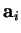
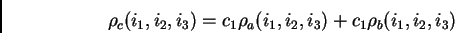

This is an interactive (no menus) option that allows one to find where the density is mostly concentrated in the cell and in what extent. When you run it, a special ``exploration'' routine is retrieved. It scans the density inside the cell, finds the grid point with the highest density and shows its Cartesian and fractional coordinates. Then, three 1D plots of the density along the cell basic lattice vectors

and passing through the grid point are calculated and plotted as shown in Fig. 3.6.|
 |
These peak-shaped curves allow you to estimate the width of each peak. This is needed as the next thing you will be asked to do is to specify the integration radius: the charge inside the sphere with that grid point as the centre will be calculated and shown.
Then, the charge inside the sphere will be ``cut off''3.9, and the procedure can be repeated for the rest of the cell as many times as you wish. This way the whole cell can be represented by lumps of densities in spheres. The result will be dumped in a file explor.dat. An example of the workout of the routine:
........> Final distribution of the density:
Peak Hight _________(x,y,z)_________ Charge(e) Radius
1 7.77606 ( 0.00000, 0.25000, 4.83333) 5.88374 1.00000
2 2.09367 ( 0.66667, 4.91667, 0.50000) 0.24454 0.50000